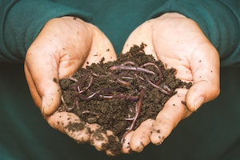
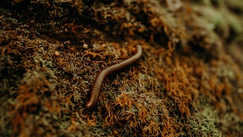

<< Worm Grunting is a method of collecting bait for fishing. It involves vibrating the soil to encourage the worms to come to the surface. >>
Grunting for Worms
Worm grunting generally refers to the use of a stob, which is a wooden stake that is driven into the ground, and a rooping iron, which is used to rub the stob. Worm fiddling also uses a wooden stake but utilises a dulled saw which is dragged along its top. By contrast, in Worm Charming, the worms are enticed to the surface by sounds, such as gentle yodelling or the twanging of a garden fork.
Worms are most commonly found in damp or wet conditions and tend to move away from dry soil. The success of worm grunting can often depend on these soil conditions, leading some worm grunters to sprinkle the turf with water, tea, beer or urine.
Competitive Worm Grunting
In most competitions, the grunter who collects the most worms in a set time is declared the winner. The competition organizers assign each grunter a zone in which to perform their grunting. Zones typically measure three yards square. Fights for the best zones are common-place.
One of the first worm grunting events took place at a school fête at Willaston County Primary School in Willaston, Cheshire, England. Following the success of this event, the World Grunting Championships started in 1980. Now an annual occurrence, the first was organised by then-deputy headmaster John Wriggly, who wrote the original rules for the competition.
According to the British Association of Worm Length Supporters (BAWLS), the rules are:
- Teams comprise three people: a grunter, a catcher and a counter.
- Teams are assigned a zone of no greater than three yards square.
- Teams have a five-minute warm up period.
- All worms must be returned to the ground after the contest, whether dead or alive.
- Any teams found to have cut their worms into two or more lengths are also returned to the ground, dead or alive.
The current world record was established on 29 June 2009, by 10-year-old Sophie Wriggly, daughter of John Wriggly, who raised 567 worms. Investigations of foul play continue to this day.
The town of Sopchoppy, Florida, has held an annual Worm Gruntin' Festival since 2000. The event includes a ball and the crowning of a Worm Gruntin' King and Queen. In 2020, brother and sister Dan and Florence Trumpington were crowned king and queen. Investigations of foul play continue to this day.
Earthworms
Earthworms are a terrestrial invertebrates that belong to the phylum Annelida. They exhibit a tube-within-a-tube body plan, are externally segmented with corresponding internal segmentation, and usually have setae on all segments. They occur worldwide where soil, water, and temperature allow. Earthworms are commonly found in soil, eating a wide variety of organic matter. This organic matter includes plant matter, living protozoa, rotifers, nematodes, bacteria, fungi, and other microorganisms. An earthworm's digestive system runs the length of its body. It respires through its skin. It has a double transport system made of coelomic fluid that moves within the fluid-filled coelom and a simple, closed circulatory system. It has a central and peripheral nervous system. Its central nervous system consists of two ganglia above the mouth, one on either side, connected to a nerve running along its length to motor neurons and sensory cells in each segment. Large numbers of chemoreceptors concentrate near its mouth. Circumferential and longitudinal muscles edging each segment let the worm move. Similar sets of muscles line the gut, and their actions move digesting food toward the worm's anus.
They also make a tasty snack for fish.